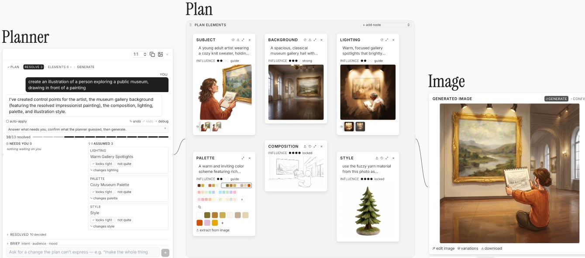

先把模糊要求变成可检查的决定
reComposer针对的是创作者已经有大致方向、却还没有完整画面的时候。用户先输入想法，规划代理把主体、构图、背景、配色等决定显露出来，并提出尚未说明的问题。用户可以修改这些内容，再生成最终图。它是一项研究界面，不是Apple已推出的消费功能。对品牌插画或分镜任务，我们更愿意先核对不可变条件，例如角色形象和需要表达的信息；否则第一张看起来完整的图很容易成为默认答案，后续修改只围着模型最初的猜测打转。
reComposer · 论文／交互研究原型

reComposer针对的是创作者已经有大致方向、却还没有完整画面的时候。用户先输入想法，规划代理把主体、构图、背景、配色等决定显露出来，并提出尚未说明的问题。用户可以修改这些内容，再生成最终图。它是一项研究界面，不是Apple已推出的消费功能。对品牌插画或分镜任务，我们更愿意先核对不可变条件，例如角色形象和需要表达的信息；否则第一张看起来完整的图很容易成为默认答案，后续修改只围着模型最初的猜测打转。
界面里的计划元素可分别编辑。构图可以拖拽、缩放、画草图，配色可以直接调整或从参考图提取；用户也能继续用对话要求整体变化。最终生成时，系统把这些元素及其影响程度合成多模态提示。这里新增的是可见的中间表达，不是宣称出现了新的图像基础模型。采用时值得观察一次修改的范围：改背景是否意外改变人物，调配色是否破坏字体。若界面能清楚显示哪些决定一起变化，创作者才不必重新读整段聊天来寻找原因。
元素可以被排除、作为参考、获得较强影响，或设置为锁定。用户因此能保留一个已定的方向，同时把另一个方向留给模型探索。然而锁定仍通过生成请求表达，不能视作像传统矢量编辑器那样的几何保证。我们的判断是，专业使用应把最终结果与原计划并排检查，尤其核对连续分镜或一组图标。一次看似成功的示例不能证明整组始终一致；若关键细节经常需要人工重画，计划层的收益就应与这份返工一起计算。
论文以八名需要在工作中制作图像的参与者，对比聊天生成与reComposer；参与者报告更强的控制感和作品归属感。样本小，不能据此推导普遍效率、生成质量或商业采用率。本文没有核实公开服务价格、部署区域或长期使用成本。对产品团队更直接的启示是保留中间决定，而不是在每轮对话后立刻交一张成图。下一步应检查不同熟练度的人是否能理解这些元素，以及为了完成一项普通任务，计划编辑会不会增加超过其收益的操作负担。